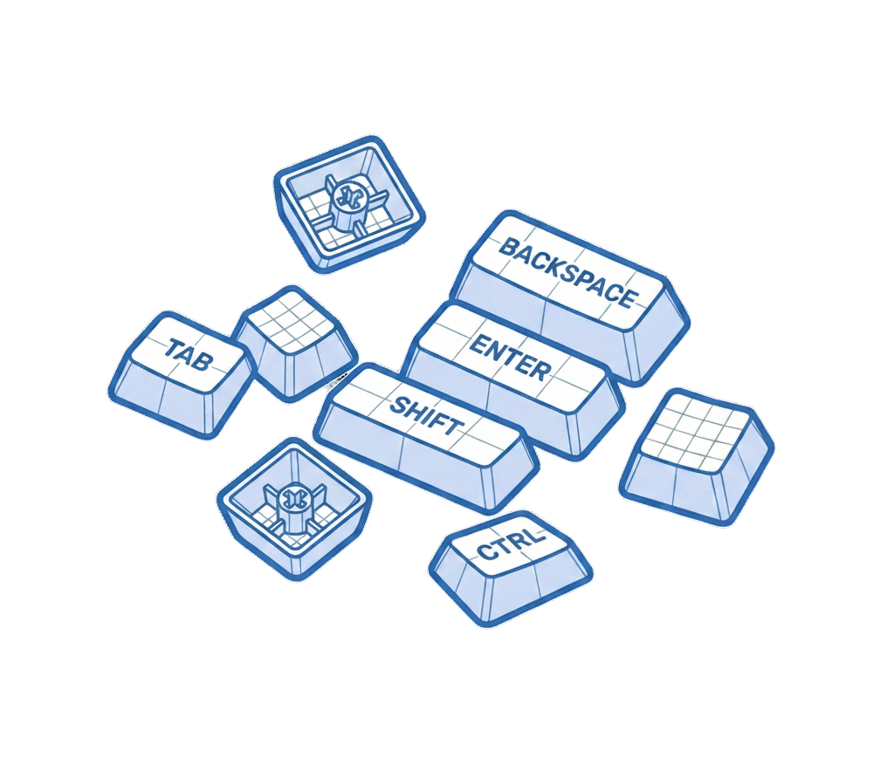
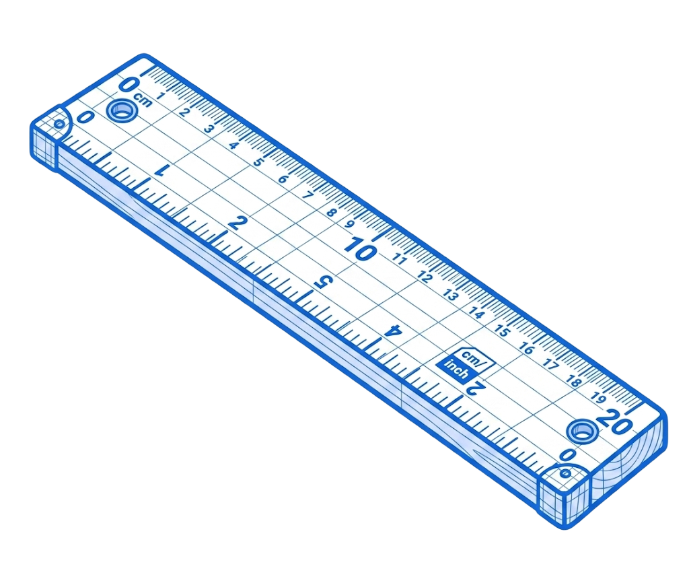
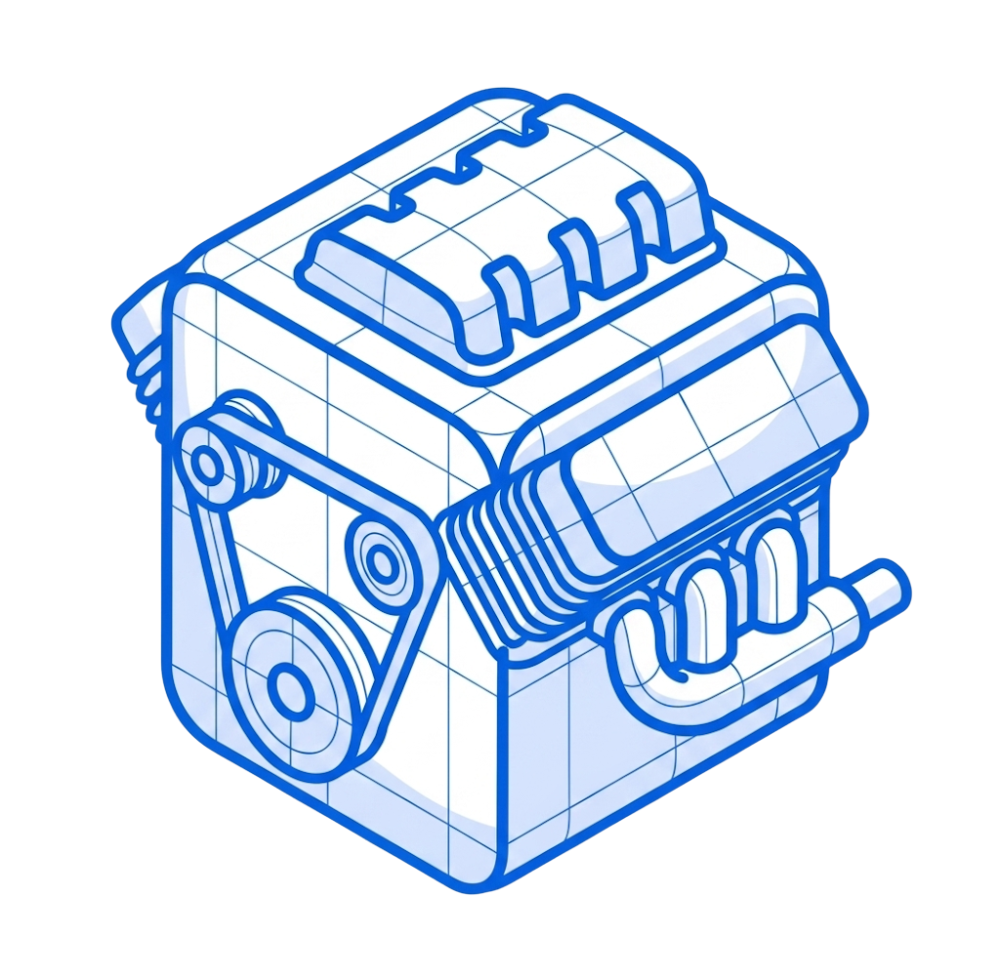

Deze lezing behandelt de interne werking van webbrowsers en de geschiedenis van browserontwikkeling. Het begrijpen van hoe browsers HTML, CSS en JavaScript verwerken is cruciaal voor het optimaliseren van webpagina's en het voorkomen van performance problemen. De rendering engine en JavaScript engine zijn aparte componenten die elk hun eigen taak hebben in het verwerken van webpagina's.
Waarom is dit belangrijk? Verkeerd gebruik van scripts en CSS kan leiden tot geblokkeerde rendering en trage laadtijden. Door te begrijpen hoe browsers werken, kun je slimmere keuzes maken over waar je scripts plaatst en hoe je ze laadt.
Browsers hebben verschillende manieren om JavaScript te laden zonder de HTML parsing te blokkeren:
<!-- Async: laad het script parallel, voer uit zodra het klaar is -->
<script async src="script.js"></script>
<!-- Defer: laad parallel, maar voer pas uit na HTML parsing -->
<script defer src="script.js"></script>
<!-- Standaard: blokkeert HTML parsing tot script is uitgevoerd -->
<script src="script.js"></script>Defer is meestal de veiligste keuze voor scripts die de DOM manipuleren. De oude truc was om scripts onderaan de pagina te plaatsen, wat nog steeds werkt.
Door backward compatibility werken oude HTML features nog steeds in moderne browsers:
<!-- Document.all - werkt nog steeds maar gebruik het niet -->
<script>
// Gebruik querySelector in plaats daarvan
const element = document.querySelector('.classname');
</script>
<!-- Forms collecties -->
<form name="myForm">
<input name="username" type="text">
</form>
<script>
// Legacy manier (werkt nog steeds)
document.forms.myForm.elements.username.value;
// Moderne manier (gebruik deze)
document.querySelector('form[name="myForm"] input[name="username"]').value;
</script>Het doctype bepaalt welke rendering mode de browser gebruikt:
<!-- MET doctype: Standards Mode (gebruik dit altijd) -->
<!DOCTYPE html>
<html>
<head>
<title>Moderne pagina</title>
</head>
<body>
<!-- Content -->
</body>
</html>
<!-- ZONDER doctype: Quirks Mode (gebruik NOOIT) -->
<html>
<body>
<!-- Dit triggert Internet Explorer 6 CSS compatibiliteit -->
</body>
</html>defer om HTML parsing niet te blokkerendocument.all, <blink>, <marquee> en <frameset>Belangrijke momenten:
<img> tagModerne rendering engines:
Nieuwe browsers in ontwikkeling:
Belangrijke componenten:
Toegankelijkheid:
Deze lezing gaat over het overbruggen van de kloof tussen creatieve coding en praktische webontwikkeling. De spreker (Nils van Nine Elements) betoogt dat moderne tools zoals Figma, Tailwind en AI ervoor hebben gezorgd dat we steeds sneller dezelfde saaie layouts kunnen bouwen, maar dat CSS veel meer mogelijkheden biedt dan wat in Figma mogelijk is. Het doel is om te laten zien hoe je met moderne CSS-technieken creatieve, unieke websites kunt bouwen die zich onderscheiden van de standaard "hero + three boxes + CTA + footer" layouts.
Waarom is dit belangrijk? Tools zoals Figma zijn ontworpen met development in gedachten (auto layout werkt zoals Flexbox, box shadows matchen CSS syntax), maar hebben ons niet creatiever gemaakt—alleen sneller. Er is meer mogelijk op het web dan in Figma.
Het FR (fraction) unit verdeelt beschikbare ruimte proportioneel.
.container {
display: grid;
grid-template-columns: 2fr 3fr auto 1fr;
/* 2fr, 3fr, 1fr verdelen beschikbare ruimte in ratio 2:3:1 */
/* auto neemt alleen de ruimte die nodig is voor content */
}
.headline {
grid-column: 2 / 4; /* Start op kolom 2, eindigt voor kolom 4 */
}
.paragraph {
grid-column: 3 / 4;
max-width: 65ch; /* Geeft de auto-kolom een breedte */
}Dit zorgt voor dynamische layouts waarbij white space automatisch wordt verdeeld wanneer er ruimte beschikbaar is.
In plaats van video's kun je een image strip gebruiken met steps() timing function.
.keyvisual {
background-image: url('sprite-strip-32-frames.png');
background-size: 3200% 100%; /* 32 frames naast elkaar */
animation: stop-motion 3s steps(31, end) infinite;
/* 31 steps voor 32 frames (eerste frame = stap 0) */
}
@keyframes stop-motion {
from {
background-position: 0% 100%;
}
to {
background-position: 100% 100%;
}
}Steps() zorgt ervoor dat de animatie niet smooth overgaat maar in discrete stappen springt, waardoor je een flipbook-effect krijgt zonder video te gebruiken.
Subgrid laat child elements de grid tracks van hun parent hergebruiken.
.timetable-body {
display: grid;
grid-template-rows: repeat(288, 1fr);
/* 24 uur × 12 rows = 288 (elk row = 5 minuten) */
}
.stage {
display: grid;
grid-template-rows: subgrid; /* Hergebruikt parent rows */
grid-row: 1 / -1; /* Stretch over alle rows */
}
.session {
/* Gebruik custom properties voor start/end tijden */
--start: 144; /* 12:00 = row 144 */
--end: 180; /* 15:00 = row 180 */
grid-row: var(--start) / var(--end);
}Voordeel: wanneer één sessie groter wordt (meer tekst), groeien alle parallelle tracks mee.
.timetable-body {
overflow-x: auto;
overflow-y: visible;
}
.hour-indicator {
position: sticky;
left: 0; /* Sticky binnen horizontal scroll container */
}Voor verticale sticky headers buiten de scroll container gebruik je een fake element met scroll-driven animation.
.timetable-head {
position: sticky;
top: 0;
animation: slide linear;
animation-timeline: scroll(x); /* Gekoppeld aan horizontale scroll */
}
@keyframes slide {
from { transform: translateX(0); }
to { transform: translateX(var(--scroll-distance)); }
}p::first-line {
font-size: 1.2rem;
font-weight: bold;
text-decoration: underline;
/* Of gebruik outline text effect */
-webkit-text-stroke: 1px black;
-webkit-text-fill-color: transparent;
}De ::first-line pseudo-element past styling toe op alleen de eerste regel van een tekstblok. Dit past dynamisch aan bij viewport changes.
/* Geef elementen een view-transition-name */
.logo {
view-transition-name: site-logo;
}
.page-indicator {
view-transition-name: nav-indicator;
}Wanneer je navigeert naar een nieuwe pagina met dezelfde view-transition-name, animeert de browser automatisch tussen de twee posities. Werkt als "Smart Animate" in Figma.
.keyvisual {
background-image: url('black-white-image.png');
mix-blend-mode: difference; /* Inverteert achtergrondkleuren */
}Een zwart-wit image met blend mode difference inverteert de kleuren van de achtergrond, waardoor je verschillende kleureffecten krijgt op verschillende achtergronden zonder meerdere assets.